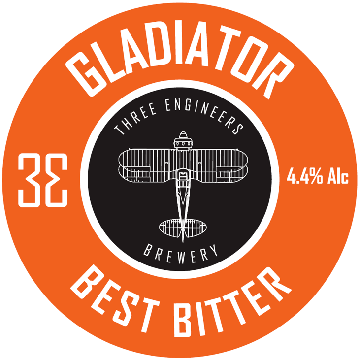
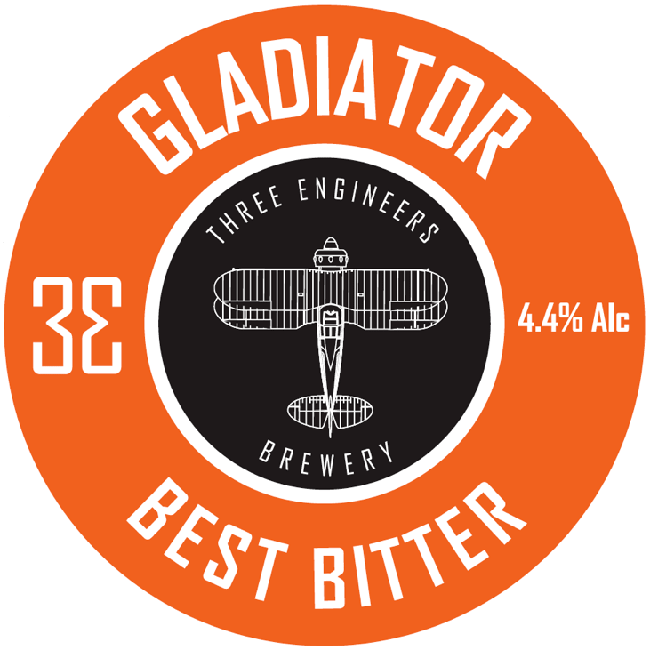
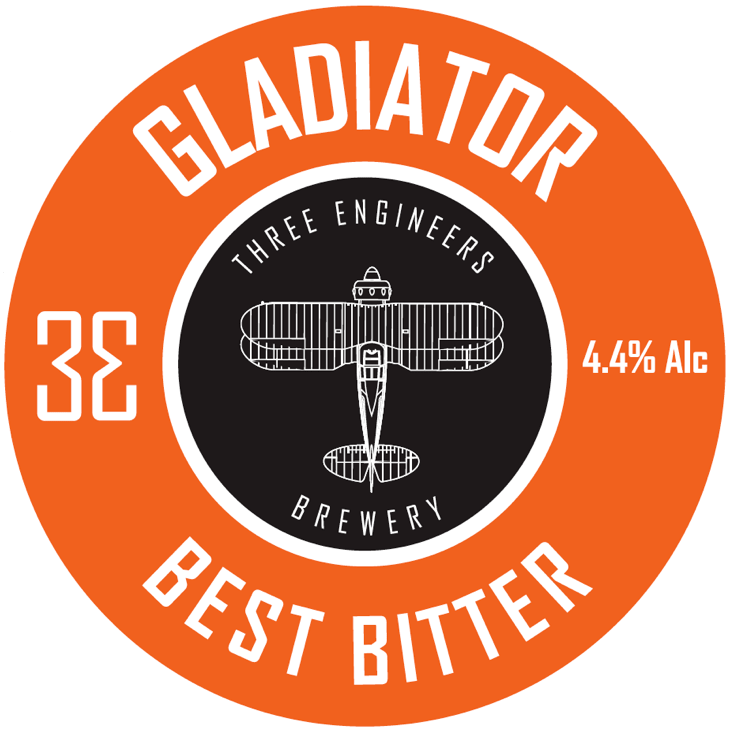
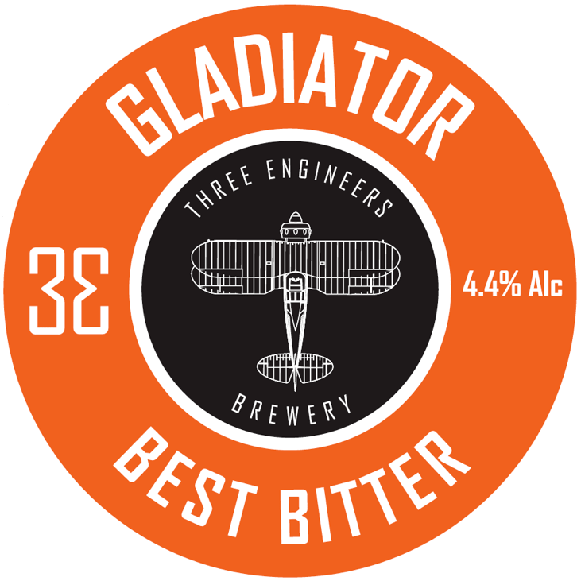

For the Best Beer...
Call an Engineer!
Buy Beer!
 



 

Three Engineers Brewery started as a nano brewery in a small workshop - and has grown into a fully fledged micro brewery, making distinctive, high quality ales.
The engineers met while working together as aerospace engineers at Filton, Bristol. We all love real ales - so we decided to make our own. But first we had to build the brewing equipment.
If you want to try a pint, buy a bottle or order a cask for your tap room, please look at our beers page, or check out the latest information on Facebook.

A unique mix between an IPA and wheat beer. The grain bill is a 50/50 split between classic English malts and German Wheat Malt. Bittered with Goldings and subtle fruity flavours delivered from Belgian and New Zealand hops.
A session pale ale with a mellow and fruity hop character. Dry hopped with Citra hops to add aromas of tropical fruit.

A classic British bitter. A rich malty flavour with a hint of sweetness from a small addition of Belgian malt.
A dark and seriously smooth porter with a rich malty flavour with hints of Belgian malts. Bittered with classic English malts.
A seriously hoppy IPA with bags of character from Citra hops. Dry hopped multiple times to give a bold aroma and flavour of citrus fruit.

A heavily hopped British pale ale. Using Marris Otter malt for a pale colour and bittered using Fuggles hops to give a refreshing session pale ale.
We're putting all our energy into brewing great beer - but we will be announcing new dates for tap take overs and brewery tours in 2020... please keep an eye on our Facebook page for details!


REGISTERED ADDRESS
Three Engineers Brewery,
The Cow Byers,
Winterbourne Medieval Barn,
Church Lane,
Winterbourne,
BS36 1SE
PHONE............................07990 570 414
EMAIL...... beer@threeengineersbrewery.co.uk
FACEBOOK:............Three Engineers Brewery